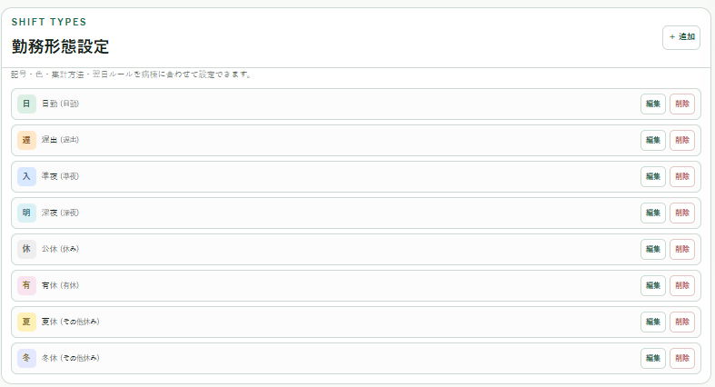
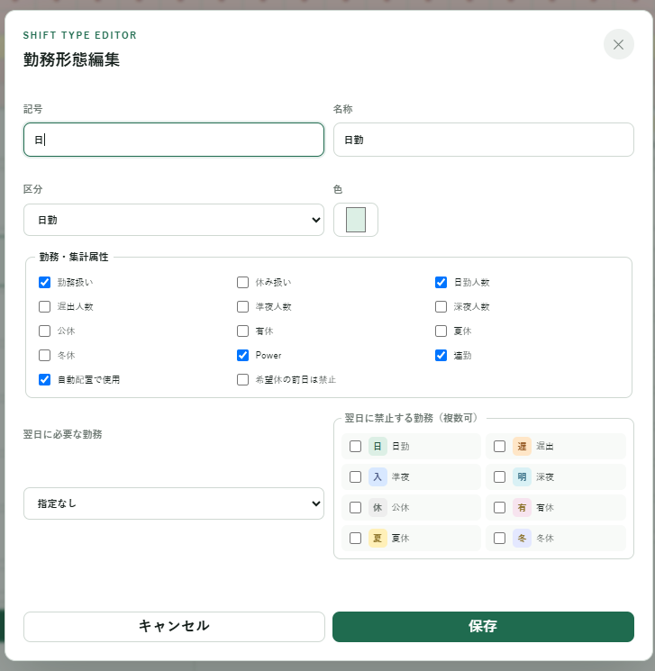
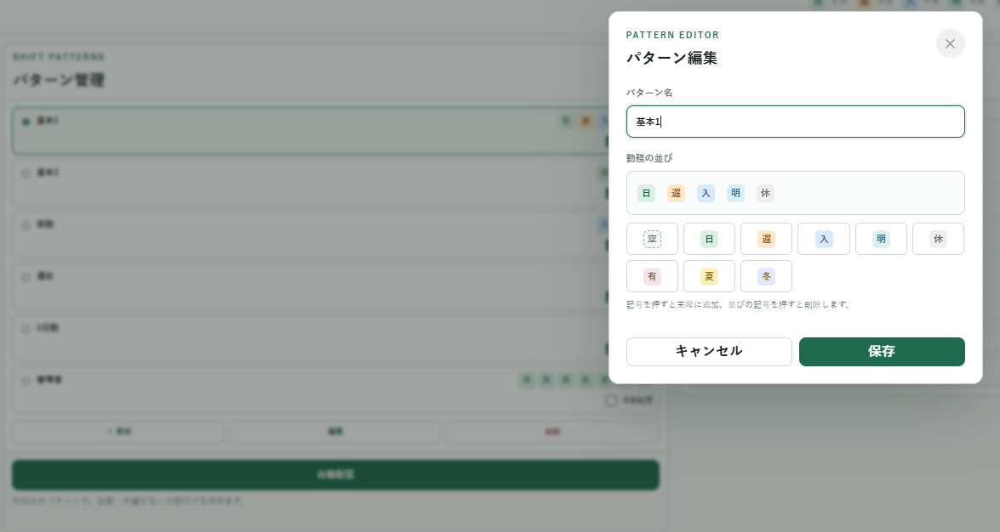
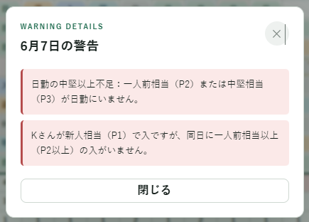
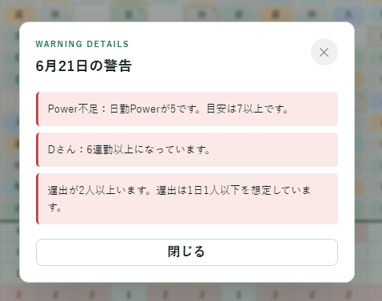

NURSE SHIFT PLANNER
管理者支援システム Ver0.7.3 取扱説明書
この説明書は、現在のコードで確認できる実装済み機能に基づいて作成しています。
1. 一言メッセージ
勤務表の入力、確認、調整を一つの画面で行い、作成作業の負担を軽くするための補助ツールです。 自動配置や警告、集計を活用しながら、最後は必ず人の目で確認してください。
2. アプリ概要

「管理者支援システム Ver0.7.3」は、看護師などの勤務表作成を支援する静的Webアプリです。 勤務を自動で完成させるソフトではなく、勤務記号や登録済みパターンを配置しながら、勤務表のたたき台を作るためのツールです。
勤務入力、希望入力、希望の勤務表反映、勤務パターン管理、自動配置、自動調整、警告表示、評点、日別集計、個人集計、NGペア管理、ルール設定、カスタム設定、CSV出力、印刷用レイアウトなどを利用できます。 データはブラウザの localStorage に自動保存されます。
3. 画面構成

- 上部ヘッダー：アプリ名、評点、保存状態、月変更、CSV出力、印刷前チェック、シフト表クリア、初期化
- 勤務表エリア：行事予定、日付、曜日、スタッフ別勤務表、日別集計、警告行
- 勤務表操作エリア：自動調整、希望の勤務表反映、ハイライト色、勤務入力／希望入力の切り替え
- 勤務表下の設定エリア：勤務パターン管理と勤務形態設定、その下にスタッフ管理
- 右側パネル：個人集計、NGペア、ルール設定、カスタム設定
4. 勤務入力モード

「勤務入力」を選び、勤務セルをクリックすると勤務選択メニューが表示されます。 単独勤務として、空欄、日、遅、入、明、休、有、夏、冬を入力できます。
同じメニューから登録済みの勤務パターンも選べます。勤務パターンを選ぶと、クリックしたスタッフ・クリックした日付を開始位置として配置されます。
5. 希望入力モード

「希望入力」を選び、勤務セルをクリックすると希望入力メニューが表示されます。 希望を削除、休、有、日、遅、入、明、日/遅、夏、冬などを、勤務表セルと同じ色付きバッジで選べます。
希望が入っているセルは * 付きで表示されます。希望と違う勤務を入力しようとすると変更されません。
勤務パターンの配置でも、希望と合わないセルは上書きされません。
「希望を勤務表へ反映」を押すと、希望勤務がある空欄セルを実勤務へ反映できます。
反映後も希望データは残るため、画面上は 日* や 休* のように表示されます。
既に実勤務が入っているセルは初期動作では上書きせず、上書きする場合は確認ダイアログが表示されます。
6. スタッフ管理

スタッフ管理では、スタッフ名、P値、スタッフ別の勤務上限、自動配置・自動調整の対象をまとめて設定できます。 名前ボタンで氏名を編集し、P欄でP1からP4を選択します。P1は新人相当、P2は一人前相当、P3は中堅相当、P4は管理職相当です。 勤務表右端のP列は表示専用で、P値は日別Power集計、警告、評点に反映されます。
「＋ 追加」でスタッフを追加できます。削除時は確認ダイアログが表示され、勤務、希望、NGペアの関連データも削除されます。 自動配置と自動調整はスタッフごとに別々にON/OFFでき、OFFにした処理ではそのスタッフの勤務は変更されません。 ただし、手入力、希望入力、集計、警告、評点には通常どおり含まれます。
スタッフごとに遅出・入の月間回数と連勤日数の上限を設定できます。初期値は遅出4回、入4回、連勤6日です。 上限は自動配置を禁止する条件ではありません。超過時は個人集計の危険色、警告、評点、評点内訳に反映され、自動調整の改善候補になります。
7. 勤務形態設定


「勤務形態設定」では、初期勤務の「日・研・遅・入・明・休・有・夏・冬」に加え、施設独自の勤務形態を追加・編集・削除できます。 記号、名称、区分、色、勤務／休み扱い、日勤・遅出・準夜・深夜・各休暇・Power・連勤への集計属性、自動配置での使用を設定します。
Ver0.7.3では、構成タイプとして「通常勤務」と「午前/午後構成勤務」を選べます。 午前/午後構成勤務では、午前の勤務と午後の勤務をそれぞれ選び、日/休、休/日、日/有、有/日、日/研、研/日などを勤務形態として作成できます。 午前/午後に選べる勤務は日勤系、休み系、研修系です。入、明、遅は午前/午後構成の対象外です。 集計では午前0.5、午後0.5として扱い、日別集計、個人集計、警告、評点へ反映します。 研修は現時点では日勤系として扱い、日勤人数とPower判定にも含めます。
「翌日に必要な勤務」「翌日に禁止する勤務」「希望休の前日に配置禁止」も設定できます。 追加した勤務はセル選択画面、希望入力、パターン編集、凡例へ自動的に表示されます。 勤務を選ぶ画面では、勤務表セルと同じ色・記号を使ったバッジ表示に統一しています。 使用中の勤務形態は削除できません。記号を変更した場合は、保存済み勤務・希望・パターンにも新しい記号が引き継がれます。
8. 勤務パターン管理

勤務パターン管理では、複数日の勤務の並びを追加・編集・削除できます。 初期パターンは、基本1、基本2、夜勤、遅出、2日勤、管理者です。勤務パターンには空欄も含められます。 各勤務パターンの「自動配置」をOFFにすると、手動配置には使えますが自動配置の候補からは外れます。
9. NGペア管理

NGペアは、同じ勤務にしたくないスタッフの組み合わせを警告する機能です。 両方が同じ日に日勤、または両方が同じ日に夜勤入りの場合に警告します。 配置禁止ではありません。
10. ルール設定とカスタム設定

ルール設定では、日勤最低人数、日勤Power最低値、公休目標日数、連勤警告日数、遅出最大人数、 入最大人数、深夜最低人数、準夜最低人数を変更できます。変更は日別集計、個人集計、警告、評点に反映され、自動保存されます。
カスタム設定は、既存のルール設定とは別ブロックです。 現在の警告・評点ロジックは「組み込み判定」として一覧表示され、削除はできませんがON/OFFできます。 追加のカスタム設定は完全自由入力ではなく、文章テンプレートと選択肢を組み合わせて、現場ごとの判定条件を複数作れます。 「＋ カスタム設定を追加」から設定タイプを選び、追加した設定は編集、削除、ON/OFF切り替えができます。 OFFにすると警告、評点、評点内訳、日別集計の色付けには使われません。
「人数条件で警告・減点を無効化」では、たとえば「もし入が2人以上なら、遅出0の警告と減点を無効にする」のように設定できます。 対象は警告、減点、警告と減点から選べます。
「P値フォロー条件」では、たとえば「もしP1スタッフが入なら、P2以上のスタッフを入に1人以上必要」のように設定できます。 条件に合わない日は警告に表示され、評点と評点内訳、日別集計の色付けにも反映されます。
11. 自動配置

「自動配置」は、登録済みの勤務パターンを使い、勤務と希望が入っていない空欄セルを埋めます。 スタッフ管理で「自動配置」がONのスタッフと、勤務パターン管理で「自動配置」がONの勤務パターンだけが対象です。 自動配置後は、警告や集計を確認して必要な箇所を手直ししてください。
12. 自動調整

「自動調整」は、現在の勤務表をもとに評点が上がる小さな変更を試し、スコアが改善する変更だけを採用します。 スタッフ管理で「自動調整」がONのスタッフが対象です。希望入力があるセル、有休、夏休、冬休は変更しません。 勤務表を完成させる機能ではないため、処理後の内容を必ず確認してください。
13. 日別集計と個人集計

日別集計には、日勤、深夜、準夜、遅出、Power、警告が表示されます。人数やPowerが設定した基準を外れると、状態に応じて注意色または危険色になります。 0件の場合も0と表示されます。
個人集計には、公、日、遅、入、有、夏、冬の回数が表示されます。公休数はルール設定の目標日数と比較して色が付き、 遅出・入がスタッフ別上限を超えると該当セルが危険色になります。明は勤務表と日別集計では使用しますが、個人集計には表示しません。
14. 行事予定欄の使い方

日付行の上にある行事予定欄をクリックすると、アプリ内の入力画面で行事予定を編集できます。 行事予定名、メモ、参加スタッフ、参加スタッフに設定する希望勤務を登録できます。 参加スタッフは登録済みスタッフ一覧から複数選択できます。
希望勤務を指定して保存すると、選択した参加スタッフのその日の希望勤務へ反映されます。 既に希望勤務が入っている場合は確認ダイアログを表示し、勝手に上書きしません。 行事予定欄には予定名と参加人数が短く表示されます。 なお、行事予定自体は現時点では警告や評点には直接影響しません。
15. 評点

評点は100点から減点する方式です。0点未満のマイナス点も表示されます。 警告件数、夜勤関連、公休や公平性、Power不足、NGペアなどが反映されます。
評点部分にカーソルを合わせる、またはクリック／タップすると、減点内訳が表示されます。 分類は、警告件数、夜勤関連、Power/フォロー体制、公休/公平性、NGペアです。
16. 警告表示


警告行には警告数に応じて !、!!、!!! が表示されます。
クリックすると、その日の警告詳細を確認できます。
17. 月またぎ確認

月初や月末で前月・翌月の勤務が必要になる場合は、通常警告ではなく ↔ の月またぎ確認として表示されます。
月またぎ確認は評点の減点対象ではありません。
18. ハイライト設定

ハイライト色では、勤務表上でマウスを合わせた行・列の十字ハイライト色を変更できます。 変更した色は自動保存されます。
19. シフト表クリアと初期化

シフト表クリアは、現在表示している月の勤務データだけを空欄にします。 希望、勤務パターン、スタッフ、P値、スタッフ別設定、勤務形態、NGペア、行事予定、ルール設定は残ります。
初期化は localStorage の保存データを削除し、初期状態に戻します。
20. 自動保存、CSV出力、印刷
このアプリは保存ボタンを使わず、操作時に自動保存します。 保存先は使用中のブラウザの localStorage です。 ブラウザや端末を変更すると保存データは共有されません。
ヘッダーのCSV出力ボタンから、勤務表CSV、個人集計CSV、日別集計CSV、警告一覧CSVを出力できます。
勤務表CSVは 氏名,P,1,2,3... の形式で、希望勤務があるセルは画面表示と同じく 日* や 休* のように出力されます。
CSVはExcelで開きやすいようにUTF-8 BOM付きで保存します。
「印刷前チェック」を押すと、ブラウザの印刷画面を開きます。 印刷時は業務確認用の白黒レイアウトに切り替わり、操作ボタン、入力モード切替、自動配置・自動調整、CSV出力、設定ブロック、勤務形態設定、スタッフ管理、パターン管理、NGペア管理、使い方リンクなどは非表示になります。 残る内容は、勤務予定表タイトル、対象年月、勤務表本体、日別集計、個人集計、作成日、バージョン表記、注意書きです。
用紙はA4横向きを基本にしています。 白黒印刷でも確認できるように、余計な装飾や背景色を抑え、黒文字、罫線、太字、網掛けを中心に表示します。 ブラウザやプリンターによって縮尺や余白が変わるため、提出前に印刷プレビューで崩れがないか確認してください。
21. 実装済み機能一覧
- 勤務入力モード、希望入力モード、希望と異なる勤務の上書き防止、希望を勤務表へ反映
- スタッフの追加・削除、名前・P値・勤務上限の設定
- スタッフごとの自動配置・自動調整対象ON/OFF
- 勤務形態の追加・編集・削除、色・集計属性・前後関係ルールの設定
- 午前/午後構成勤務の作成と、0.5単位での日別集計・個人集計・警告・評点への反映
- 研修勤務を日勤系として扱い、日勤人数とPower判定へ反映
- 勤務パターンの追加・編集・削除、勤務パターンごとの自動配置対象設定
- NGペア管理、ルール設定、カスタム設定、自動配置、自動調整
- 日別集計、個人集計、勤務上限超過時の個人集計色付け
- 文章テンプレートと選択肢による複数のカスタム設定
- 組み込み判定の一覧表示とON/OFF切り替え
- カスタム設定の警告、評点、評点内訳、日別集計色付けへの反映
- CSV出力（勤務表、個人集計、日別集計、警告一覧）
- 印刷用レイアウト、白黒印刷対応、A4横向き印刷、提出前チェック用レイアウト
- 勤務選択UIの色付きバッジ表示
- 行事予定入力画面、参加スタッフ設定、行事予定から希望勤務への反映
- 評点・評点内訳、警告表示、月またぎ確認
- ハイライト設定、シフト表クリア、初期化、localStorageによる自動保存
22. 検討中の機能一覧
以下は今後追加予定、または将来的に対応したい機能候補です。 現時点では検討中であり、実装時期は未定です。実装済み機能とは区別して確認してください。
印刷まわりの改善
印刷用レイアウトは実装済みですが、施設や提出先によって調整が必要になる可能性があります。 以下は今後の改善候補です。
- 印刷レイアウトの微調整
- 1ページに収める設定
- 個人集計だけを印刷する機能
- 日別集計だけを印刷する機能
- 提出用と確認用の印刷レイアウト切り替え
- 施設ごとの帳票レイアウト調整
- 様式9に近い確認用レイアウトの改善
行事予定機能の拡張
行事予定ありの日を、将来的にルール設定や評点にも反映できるようにすることを検討中です。
- 行事予定ありの日を、将来的にルール設定や評点にも反映できるようにする
例として、病棟会の日は日勤人数を増やす、研修日のPower基準を変更する、といった使い方を想定しています。
午前/午後構成勤務の改善
午前/午後構成勤務は実装済みですが、施設ごとの運用差に合わせ、今後さらに調整する可能性があります。
- 施設ごとの午前/午後勤務パターン追加
- 午前/午後構成勤務の表示調整
- 自動配置、自動調整での午前/午後構成勤務の扱い改善
例外ルール設定の拡充
カスタム設定は実装済みですが、月や日によって通常ルールの例外が発生する場合に備え、さらに細かい選択式の例外ルールを検討中です。
- 日曜日は遅出0でも減点しない
- 行事予定がある日は日勤最低人数やPower基準を変更する
- P1スタッフが入の日は、P3以上を1人以上必要にするなど、P値フォロー条件をさらに細かくする
- 特定曜日だけ日勤最低人数を変更する
自動調整の改善
現在の自動調整機能をさらに使いやすくするため、優先度設定や調整ログの表示を検討中です。 自動調整は既存の勤務表を壊しやすいため、実装する場合は段階的に行う予定です。
- どの警告を優先して直すかをユーザーが選べる機能
- 日勤人数不足、Power不足、NGペア解消、入→明→休の構造維持、スタッフ別上限超過の改善を優先する設定
- どの変更で評点が何点改善したかを表示する自動調整ログ
その他の候補
- クラウド保存、ログイン、複数端末同期
- 自動配置ロジックの高度化、夜勤セット作成の高度化
- バックアップ・復元、スタッフ並び替え、勤務表コピー
23. 注意事項・免責
このツールは勤務表作成を補助する試作ツールです。警告、評点、自動配置、自動調整の結果を含め、最終確認は必ず人が行ってください。 労務管理、法令、所属施設の規程への適合を保証するものではありません。 実名や個人情報を入力する場合は所属施設のルールに従い、正式運用前には十分な確認とテストを行ってください。 印刷時はブラウザやプリンター設定によって縮尺や余白が変わるため、提出前に印刷プレビューで確認してください。